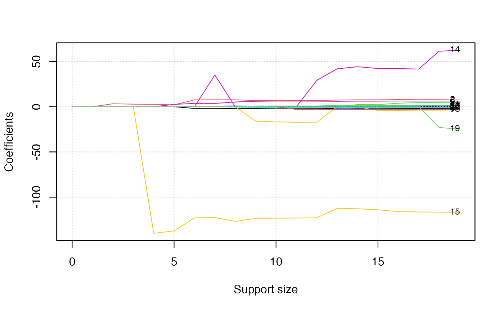
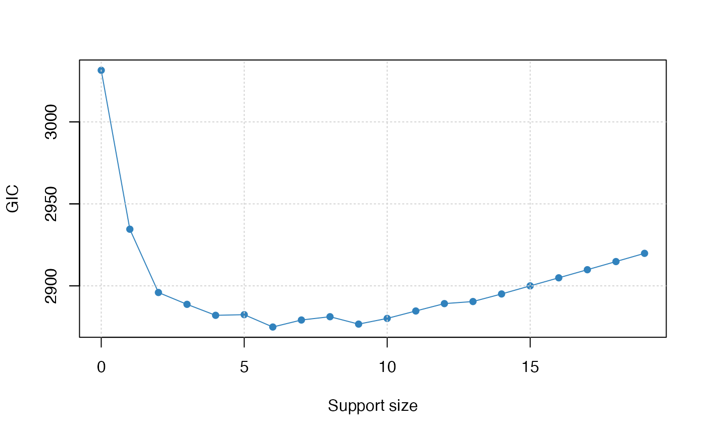

abess: Linear regression../vignettes/v01-abess-guide.Rmd
v01-abess-guide.RmdThe R package abess implement a polynomial algorithm for solving the best-subset selection problem: \[\min_{\boldsymbol{\beta} \in \mathbb{R}^p} \mathcal{L_n}({\boldsymbol\beta}), \text{ s.t. } \|\boldsymbol\beta\|_0 \leq s,\] where \(\mathcal{L}_{n}(\boldsymbol \beta)=\frac{1}{2 n}\|y-X \boldsymbol{\beta}\|_{2}^{2}\), \(\|\boldsymbol{\beta}\|_0=\sum_{i=1}^pI( \boldsymbol{\beta}_i\neq 0)\) is the \(\ell_0\)(-pseudo) norm of \(\beta\), and the sparsity level \(s\) is usually an unknown non-negative integer. Next, we present an example to show how to use the abess package to solve a simple problem.
We generate a design matrix \(X\) containing 300 observations and each observation has 1000 predictors. The response variable \(y\) is linearly related to the first, second, and fifth predictors in \(X\): \[y = 3X_1 + 1.5X_2 + 2X_5 + \epsilon,\] where \(\varepsilon\) is a standard normal random variable.
library(abess)
synthetic_data <- generate.data(n = 300, p = 1000,
beta = c(3, 1.5, 0, 0, 2, rep(0, 995)))
dim(synthetic_data[["x"]])## [1] 300 1000
head(synthetic_data[["y"]])## [,1]
## [1,] -4.063922
## [2,] 3.855246
## [3,] -3.041391
## [4,] -1.081257
## [5,] 4.986772
## [6,] 4.470901
dat <- cbind.data.frame("y" = synthetic_data[["y"]],
synthetic_data[["x"]])Then, we use the main function abess in the package to fit this dataset. By setting the arguments support.size = s, abess() function conducts Algorithm 1 for the best-subset selection with a sparsity level s. In our example, we set the options: support.size = 3, and we run Algorithm 1 with the following command:
abess_fit <- abess(y ~ ., data = dat, support.size = 3)The output of abess comprises the selected best model:
## 3
## (intercept) -0.01802179
## x1 2.96418205
## x2 1.45090693
## x3 0.00000000
## x4 0.00000000
## x5 1.90592036The support set of the best model is identical to the ground truth, and the coefficient estimation is the same as the oracle estimator given by lm function:
##
## Call:
## lm(formula = y ~ ., data = dat[, c(1, c(1, 2, 5) + 1)])
##
## Coefficients:
## (Intercept) x1 x2 x5
## -0.01802 2.96418 1.45091 1.90592Supposing we are unknown about the true sparsity level in real world data, and thus, we need to determine the most proper one. The Algorithm 3 is designed for this scenario. abess is capable of performing this algorithm:
abess_fit <- abess(y ~ ., data = dat)The output of abess() also comprises the selected best model:
best_size <- abess_fit[["best.size"]]
print(best_size)## [1] 3## 3
## (intercept) -0.01802179
## x1 2.96418205
## x2 1.45090693
## x3 0.00000000
## x4 0.00000000
## x5 1.90592036The output model accurately detect the true model size, which implies the Algorithm 3 efficiently find both the optimal sparsity level and true effective predictors.
In this tutorial, we are going to demonstrate how to use the abess package to carry out best subset selection on the Hitters dataset. We hope to use several predictors related to the performance of the baseball athletes last year to predict their salary. First, let’s have a look at this dataset. There are 19 variables except Salary and 322 observations.
## AtBat Hits HmRun Runs RBI Walks Years CAtBat CHits CHmRun CRuns CRBI CWalks
## 1 293 66 1 30 29 14 1 293 66 1 30 29 14
## 2 315 81 7 24 38 39 14 3449 835 69 321 414 375
## 3 479 130 18 66 72 76 3 1624 457 63 224 266 263
## 4 496 141 20 65 78 37 11 5628 1575 225 828 838 354
## 5 321 87 10 39 42 30 2 396 101 12 48 46 33
## 6 594 169 4 74 51 35 11 4408 1133 19 501 336 194
## League Division PutOuts Assists Errors Salary NewLeague
## 1 A E 446 33 20 NA A
## 2 N W 632 43 10 475.0 N
## 3 A W 880 82 14 480.0 A
## 4 N E 200 11 3 500.0 N
## 5 N E 805 40 4 91.5 N
## 6 A W 282 421 25 750.0 A
dim(Hitters)## [1] 322 20## [1] 59Note that this dataset contains some missing data. So we use the na.omit() function to delete rows that have incomplete information. After that, we have 263 observations remaining.
## [1] 263 20## [1] 0Then we change the factors into dummy variables with the model.matrix() function. Note that the abess() function will automatically include the intercept.
Hitters <- model.matrix(~., Hitters)[, -1]
Hitters <- as.data.frame(Hitters)The abess() function in the abess package allows you to perform best subset selection in a highly efficient way. You can call the abess() function using formula just like what you do with lm(). Or you can specify the design matrix x and the response y. The system.time() function records the run time.
library(abess)
abess_fit <- abess(Salary ~ ., Hitters)
abess_fit <- abess(Hitters[, -which(colnames(Hitters) == "Salary")], Hitters$Salary)
class(abess_fit)## [1] "abess"After get the estimator, we can further do more exploring work. The output of abess() function contains the best model for all the candidate support size in the support.size. You can use some generic function to quickly draw some information of those estimators.
# draw the estimated coefficients on all candidate support size
coef(abess_fit)## 20 x 20 sparse Matrix of class "dgCMatrix"
##
## (intercept) 535.9259 274.5803864 -47.9559022 -71.4592204 13.9231044
## AtBat . . . . .
## Hits . . 3.3008446 2.8038162 2.6757978
## HmRun . . . . .
## Runs . . . . .
## RBI . . . . .
## Walks . . . . .
## Years . . . . .
## CAtBat . . . . .
## CHits . . . . .
## CHmRun . . . . .
## CRuns . . . . .
## CRBI . 0.7909536 0.6898994 0.6825275 0.6817790
## CWalks . . . . .
## LeagueN . . . . .
## DivisionW . . . . -139.9538855
## PutOuts . . . 0.2735814 0.2735002
## Assists . . . . .
## Errors . . . . .
## NewLeagueN . . . . .
##
## (intercept) -7.6563819 91.5117981 67.9431538 114.5067227 197.6616396
## AtBat . -1.8685892 -1.8535176 -2.1250564 -2.0803280
## Hits 2.0467293 7.6043976 7.6348879 7.6482495 6.8263359
## HmRun . . . . .
## Runs . . . . .
## RBI . . . . .
## Walks 2.5574106 3.6976468 3.6644212 5.2391412 5.9761215
## Years . . . . -15.9414459
## CAtBat . . . . .
## CHits . . . . .
## CHmRun . . . . .
## CRuns . . . . 0.8143029
## CRBI 0.6492007 0.6430169 0.6445474 0.8959228 0.6000624
## CWalks . . . -0.3487728 -0.7503761
## LeagueN . . 35.0926551 . .
## DivisionW -137.3676333 -122.9515338 -122.5437635 -126.8503150 -123.4936780
## PutOuts 0.2518721 0.2643076 0.2584749 0.2655057 0.2702288
## Assists . . . 0.1790809 .
## Errors . . . . .
## NewLeagueN . . . . .
##
## (intercept) 206.5672285 218.5527334 198.4967427 142.9090129 144.6793182
## AtBat -2.2556858 -2.2102483 -2.1783358 -2.0120568 -2.0883279
## Hits 7.0378766 6.9279436 6.9273744 7.3751935 7.6436454
## HmRun . . . . 2.3406524
## Runs . . . -1.7130320 -2.3580478
## RBI . . . . .
## Walks 6.2793246 6.2243570 6.1667822 5.9906173 6.1794713
## Years -16.7414858 -17.2542087 -17.0664017 . .
## CAtBat . . . -0.1527096 -0.1488074
## CHits . . . . .
## CHmRun . . . . .
## CRuns 0.8132079 0.8111144 0.8082476 1.5535444 1.5931621
## CRBI 0.6508515 0.6594949 0.6571221 0.7850103 0.7170767
## CWalks -0.7882990 -0.7934064 -0.7898841 -0.8404419 -0.8565844
## LeagueN . . 29.1474123 41.9165343 44.2352269
## DivisionW -123.2261893 -123.1231837 -122.8009102 -112.3809790 -112.8079905
## PutOuts 0.2824819 0.2883338 0.2830813 0.2896964 0.2876182
## Assists 0.1872292 0.2795390 0.2732454 0.3312276 0.3677311
## Errors . -3.0198567 -3.3107203 -2.8685826 -3.1271251
## NewLeagueN . . . . .
##
## (intercept) 163.3275824 163.0064063 162.9932027 163.1632541 163.1035878
## AtBat -2.1085651 -2.0890552 -2.0302709 -2.0186239 -1.9798729
## Hits 7.6501026 7.8848050 7.7483580 7.7381465 7.5007675
## HmRun 2.3654025 3.8223369 4.6470956 4.6127592 4.3308829
## Runs -2.3535049 -2.5377954 -2.5882384 -2.6272166 -2.3762100
## RBI . -0.8815425 -1.1165187 -1.1190038 -1.0449620
## Walks 6.1730276 6.2941910 6.2778803 6.3108843 6.2312863
## Years -4.2321550 -4.0947594 -3.7490950 -3.8738277 -3.4890543
## CAtBat -0.1341737 -0.1350897 -0.1526121 -0.1514014 -0.1713405
## CHits . . . . 0.1339910
## CHmRun . . -0.3876922 -0.3938397 -0.1728611
## CRuns 1.5426322 1.5321626 1.5730263 1.5708067 1.4543049
## CRBI 0.7144063 0.7420886 0.8965235 0.8961782 0.8077088
## CWalks -0.8446970 -0.8559654 -0.8423839 -0.8467366 -0.8115709
## LeagueN 42.2835360 42.2286763 41.6482699 61.3012822 62.5994230
## DivisionW -113.9853363 -116.0422926 -116.4111439 -116.5862127 -116.8492456
## PutOuts 0.2859836 0.2858651 0.2827595 0.2829156 0.2818925
## Assists 0.3643305 0.3641325 0.3661464 0.3640952 0.3710692
## Errors -3.2379385 -3.1409199 -3.1840695 -3.2558249 -3.3607605
## NewLeagueN . . . -22.9788245 -24.7623251
# get the deviance of the estimated model on all candidate support size
deviance(abess_fit)## [1] 101367.13 68782.66 58263.42 55607.03 53176.52 52241.95 49800.20
## [8] 49651.96 49079.30 47327.31 47040.89 46947.37 46847.92 46177.09
## [15] 46100.11 46077.34 46053.29 46032.63 46016.41 46008.93
# print the fitted model
print(abess_fit)## Call:
## abess.default(x = Hitters[, -which(colnames(Hitters) == "Salary")],
## y = Hitters$Salary)
##
## support.size dev GIC
## 1 0 101367.13 3031.471
## 2 1 68782.66 2934.538
## 3 2 58263.42 2895.944
## 4 3 55607.03 2888.729
## 5 4 53176.52 2882.033
## 6 5 52241.95 2882.427
## 7 6 49800.20 2874.896
## 8 7 49651.96 2879.170
## 9 8 49079.30 2881.177
## 10 9 47327.31 2876.675
## 11 10 47040.89 2880.136
## 12 11 46947.37 2884.671
## 13 12 46847.92 2889.171
## 14 13 46177.09 2890.436
## 15 14 46100.11 2895.055
## 16 15 46077.34 2899.983
## 17 16 46053.29 2904.903
## 18 17 46032.63 2909.843
## 19 18 46016.41 2914.808
## 20 19 46008.93 2919.824Prediction is allowed for all the estimated models. Just call predict.abess() function with the support.size set to the size of model you are interested in. If support.size is not provided, prediction will be made on the model with best tuning value.
hitters_pred <- predict(abess_fit,
newx = Hitters[, -which(colnames(Hitters) == "Salary")],
support.size = c(3, 4))
head(hitters_pred)## 3 4
## 2 611.11976 545.8175
## 3 715.34087 643.8563
## 4 950.55323 1017.2414
## 5 424.10211 498.2470
## 6 708.86493 632.3839
## 7 59.21692 139.8497The plot.abess() function helps to visualize the change of models with the change of support size. There are 5 types of graph you can generate, including coef for the coefficient value, l2norm for the L2-norm of the coefficients, dev for the deviance and tune for the tuning value. Default if coef.
plot(abess_fit, label = TRUE)
The graph shows that, beginning from the most dense model, the 15th variable (Division, A factor with levels E and W indicating player’s division at the end of 1986) is included in the active set until the support size reaches 3.
We can also generate a graph about the tuning value. Remember that we used the default GIC to tune the support size.
plot(abess_fit, type = "tune")
The tuning value reaches the lowest point at 6. And We might choose the estimated model with support size equals 6 as our final model. In fact, the tuning values of different model sizes are provided in tune.value of the abess object. You can get the best model size through the following call.
extract(abess_fit)[["support.size"]]## [1] 6To extract any model from the abess object, we can call the extract() function with a given support.size. If support.size is not provided, the model with the best tuning value will be returned. Here we extract the model with support size equals 6.
## List of 7
## $ beta :Formal class 'dgCMatrix' [package "Matrix"] with 6 slots
## .. ..@ i : int [1:6] 0 1 5 11 14 15
## .. ..@ p : int [1:2] 0 6
## .. ..@ Dim : int [1:2] 19 1
## .. ..@ Dimnames:List of 2
## .. .. ..$ : chr [1:19] "AtBat" "Hits" "HmRun" "Runs" ...
## .. .. ..$ : chr "6"
## .. ..@ x : num [1:6] -1.869 7.604 3.698 0.643 -122.952 ...
## .. ..@ factors : list()
## $ intercept : num 91.5
## $ support.size: num 6
## $ support.vars: chr [1:6] "AtBat" "Hits" "Walks" "CRBI" ...
## $ support.beta: num [1:6] -1.869 7.604 3.698 0.643 -122.952 ...
## $ dev : num 49800
## $ tune.value : num 2875The return is a list containing the basic information of the estimated model.
The consists of 18 variables about crime from the 1995 FBI UCR (e.g., per capita arson crimes and per capita violent crimes), communities information in the U.S. (e.g., the percent of the population considered urban), socio-economic data from the 90s census (e.g., the median family income), and law enforcement data from the 1990 law enforcement management and admin stats survey (e.g., per capita number of police officers). It would be appropriate if any of the crime state in community can be modeled by the basic community information, socio-economic and law enforcement state in community. Here, without the loss of generality, per capita violent crimes is chosen as the response variable, and 102 numerical variables as well as their pairwise interactions is considered as predictors. The pre-processed dataset for statistical modeling has 200 observations and 5253 predictors, and the code for pre-processing are openly shared in .
The pre-processed dataset can be freely downloaded by running:
working_directory <- getwd()
if (file.exists("crime.rda")) {
load("crime.rda")
} else {
crime_data_url <- "https://github.com/abess-team/abess/raw/master/R-package/data-raw/crime.rda"
download.file(crime_data_url, "crime.rda")
load(file.path(working_directory, "crime.rda"))
}As mentioned before, this dataset comprises 5000+ features, much larger than the number of observations:
dim(crime)## [1] 500 5254And thus, it would be better to first perform feature screening, which is also supported by the abess function. Suppose we are interested in retaining 1000 variables with the largest marginal utility, then we can conduct the command:
## List of 14
## $ beta :Formal class 'dgCMatrix' [package "Matrix"] with 6 slots
## .. ..@ i : int [1:528] 442 442 1196 374 442 1196 374 442 1003 1196 ...
## .. ..@ p : int [1:34] 0 0 1 3 6 10 15 21 28 36 ...
## .. ..@ Dim : int [1:2] 5253 33
## .. ..@ Dimnames:List of 2
## .. .. ..$ : chr [1:5253] "pop" "perHoush" "pctBlack" "pctWhite" ...
## .. .. ..$ : chr [1:33] "0" "1" "2" "3" ...
## .. ..@ x : num [1:528] -0.251 -0.196 0.496 0.812 -0.173 ...
## .. ..@ factors : list()
## $ intercept : num [1:33] 599 2115 1668 1518 1189 ...
## $ dev : num [1:33] 190932 86423 80306 75780 72033 ...
## $ tune.value : num [1:33] 6080 5696 5672 5656 5643 ...
## $ nobs : int 500
## $ nvars : int 5253
## $ family : chr "gaussian"
## $ tune.path : chr "sequence"
## $ tune.type : chr "GIC"
## $ support.size : int [1:33] 0 1 2 3 4 5 6 7 8 9 ...
## $ edf : num [1:33] 0 1 2 3 4 5 6 7 8 9 ...
## $ best.size : int 8
## $ screening.vars: chr [1:1000] "pctBlack" "pctWhite" "medIncome" "pctWdiv" ...
## $ call : language abess.formula(formula = y ~ ., data = crime, screening.num = 1000)
## - attr(*, "class")= chr "abess"The returned object of abess includes the features selected by screening. We exhibit six variables of them:
head(abess_fit[["screening.vars"]])## [1] "pctBlack" "pctWhite" "medIncome" "pctWdiv" "pctPubAsst"
## [6] "medFamIncome"Then, by the generic extract function, we can obtain the best model detected by ABESS algorithm, and get the variables in the best model:
## List of 7
## $ beta :Formal class 'dgCMatrix' [package "Matrix"] with 6 slots
## .. ..@ i : int [1:8] 303 374 1003 1196 1530 1746 2378 3266
## .. ..@ p : int [1:2] 0 8
## .. ..@ Dim : int [1:2] 5253 1
## .. ..@ Dimnames:List of 2
## .. .. ..$ : chr [1:5253] "pop" "perHoush" "pctBlack" "pctWhite" ...
## .. .. ..$ : chr "8"
## .. ..@ x : num [1:8] 0.192 1.071 1.867 0.301 -0.152 ...
## .. ..@ factors : list()
## $ intercept : num -55.8
## $ support.size: int 8
## $ support.vars: chr [1:8] "pctBlack:pctWhite" "pctBlack:pctVacantBoarded" "pct65up:pctMaleDivorc" "pctUrban:pctKidsBornNevrMarr" ...
## $ support.beta: num [1:8] 0.192 1.071 1.867 0.301 -0.152 ...
## $ dev : num 61304
## $ tune.value : num 5613
best_vars <- best_model[["support.vars"]]
best_vars## [1] "pctBlack:pctWhite" "pctBlack:pctVacantBoarded"
## [3] "pct65up:pctMaleDivorc" "pctUrban:pctKidsBornNevrMarr"
## [5] "pctWdiv:pctEmployMfg" "pctPubAsst:ownHousUperQ"
## [7] "otherPerCap:pctHousWOphone" "pctMaleDivorc:pctPopDenseHous"